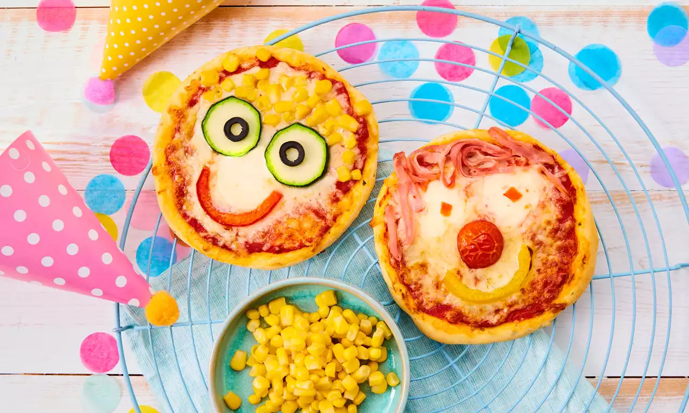

Kinder Pizza

{kind=link}
Pizza stammt ursprünglich aus Italien und ist ein Teigfladen mit Belag aus Tomatensosse, Käse und weiteren Zutaten. Die Kinder Pizza ist eine kindgerechte Version: sie ist kleiner, einfacher zu belegen und kann schnell zubereitet werden. Kinder können beim Belegen helfen und ihre eigene Pizza gestalten. Sie eignet sich perfekt als Snack, Mittagessen oder für Geburtstage und kleine Feste. Der Teig kommt ohne Hefe aus und ist in kurzer Zeit fertig gebacken.
Rezeptinformationen
Zubereitungszeit: 40 Minuten
Niveau: leicht
Portionen: ca. 8 Stück
Zutaten
- 250 g Weizenmehl
- 3 gestrichene TL Backpulver
- 1 Prise Salz
- 125 g Crème fraîche Gartenkräuter
- 1 Ei (Grösse M)
- ca. 4 EL Wasser
- 200 g Tomatensosse
- 50 g gekochter Schinken oder Salami
- ca. 400 g Gemüse nach Wahl (Paprika, Zucchini, Champignons, Cocktailtomaten, Mais, Oliven)
- 125 g Mini-Mozzarella-Kugeln
- 100 g geriebener Käse (z. B. Gouda)
- Backpapier für das Backblech
Zubereitung
-
Vorbereitung:
- Backblech mit Backpapier auslegen.
- Backofen vorheizen: Ober- und Unterhitze 220 °C, Heissluft 200 °C.
-
Pizzabelag vorbereiten:
- Schinken oder Salami in feine Streifen schneiden.
- Gemüse putzen, waschen und in kleine Streifen oder Scheiben schneiden.
- Tomaten halbieren, Mais und Oliven abtropfen lassen.
- Mozzarella-Kugeln ggf. halbieren oder würfeln.
-
Teig zubereiten:
- Mehl mit Backpulver in einer Schüssel mischen.
- Ei, Crème fraîche und Wasser hinzufügen und 1–2 Minuten zu einem glatten Teig verkneten.
-
Teig portionieren:
- Teig auf leicht bemehlter Fläche zu einer Rolle formen und in 8 gleich grosse Stücke schneiden.
- Jedes Stück zu einer Kugel formen und zu etwa 15 cm grossen Pizzatalern ausrollen (Ränder etwas dicker lassen).
- Teigtaler auf das Backblech legen.
-
Pizzen belegen:
- Jeden Teigtaler mit ca. 2 EL Tomatensosse bestreichen, Rand frei lassen.
- Käse aufstreuen.
- Mit Schinken, Gemüse, Mozzarella und weiteren Zutaten belegen.
-
Backen:
- Pizza ca. 9–11 Minuten im unteren Drittel des Ofens backen, bis der Käse geschmolzen und leicht gebräunt ist.
- Warm servieren.